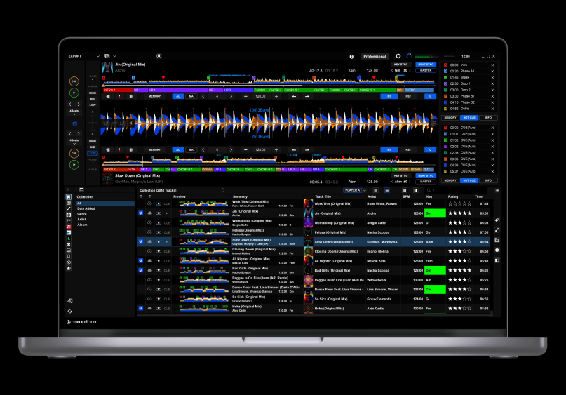
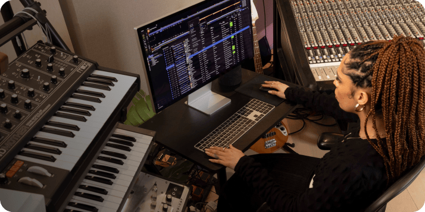

从找歌到上台：我用 rekordbox 把 DJ 备演压成一条六步流水线
以前备演要在三个文件夹里翻歌、手工记 Cue 点、U 盘来回拷——现在整条链交给 rekordbox，从曲库整理到上台打碟一条线走完，中间零手动转存。
每周三晚上有一场固定的 club set，以前备演的流程是：微信接收主办方发来的歌单 → 网盘下载 → 扔到桌面一个叫"演出曲目"的文件夹 → 打开播放器逐首听、手工记哪段该进、哪段该渐出 → 把文件夹整个拷到 U 盘 → 揣着 U 盘打车去现场。六步里至少三次手动搬文件，现场还经常翻半天找不到那首 Bootleg 在哪个子文件夹。
把 rekordbox官网 插进这条链之后，备演变成了一条没有手动拷贝环节的流水线。它的核心是把"找歌 → 分析 → 打点 → 组织 → 导出"这五件事收在一个界面里，上下游分别接微信（接歌单）和 CDJ/XDJ（现场播放），中间不需要再开任何别的软件。整个工作流拆开来看是这样的。
旧流程卡在哪
先复盘一下之前的痛点，这也是为什么换了工具之后感受那么明显：
- 曲库膨胀之后找歌全靠运气：两年下来桌面堆了几十个"演出曲目_20240308"这种文件夹，里面还有按风格分子目录的子目录。现场灯光暗、耳机里响着混音，在触控板上翻三四层才能找到目标曲目——这是演出前最容易炸心态的环节。
- Cue 点记在纸上容易错位：以前手工用播放器设好起播点和 loop，记在小纸条上带去现场，上台前还要对着 CDJ 屏幕核对一遍。偶尔现场临时改了 loop 长度，下来纸条就作废了，下次再用那首歌等于白记。
- U 盘导出是条漏缝：播放器不识别无损格式、同名不同码率的曲目会被覆盖、Cue 点在 CDJ 上显示不出来——这些坑以前每次演出至少踩一个，踩多了开始带两个 U 盘当备胎。
这些问题本质上都是同一个矛盾：现场设备和桌面曲库之间没有中间层。播放器只认文件不认元数据，而我的 Cue 点、调性、BPM 这些现场真正要用的信息，全藏在播放器的内部数据库里，跟文件本身脱节。
新流程：rekordbox 作为中间枢纽
rekordbox 解决的就是这个"中间层"问题。它不是播放器的替代品，而是把曲库当成项目来管理——每首歌不只是一个文件，还有一套跟着它走的元数据：调性、BPM、Cue 点、循环、颜色标签、备注。导出 U 盘的时候，这些信息全部打包写进一个 .rekordbox 数据库文件，CDJ 插 U 盘直接读这套数据库，Cue 点在哪个 pad 上、循环多长、甚至我在备注里写的"这里贝斯线会断一拍"，全部原样呈现。
安装包从下载拿，整套流水线现在长这样：
第一步：微信接收歌单 → 网盘批量下载到"待导入"文件夹。这一步不变，还是用浏览器批量保存。第二步：rekordbox 导入 → 自动分析 BPM 和调性。拖进去就能分析，也可以批量选中后右键一次性跑完。分析引擎比播放器准——遇到变速曲目会标出多个 BPM 段，网格自动吸附，QUANTIZE 开关一开，后续设 Cue 点和循环全不会歪。第三步：批量打标签 + 设颜色语义。这是以前没做过但现在必做的一步：给开场曲标红色、高潮备用标蓝色、过渡垫场标绿色，现场一眼认出。标题里的 Remix、Bootleg、Featuring 后缀也要补全——以前搜"One Kiss"会出来三首，现在只有一首精准匹配。第四步：设 Hot Cue + Memory Cue。Hot Cue 占 A–P 共 16 个 pad，只留给现场肯定会用到的入口；细节注脚用不限数量的 Memory Cue，比如"这里人声切半拍后进第二段 drop"——不占 pad 槽位但现场能按调用键逐一切换。循环入出点自动吸附节拍，QUANTIZE 开着手抖也不会切出歪 loop。第五步：整理播放列表 + 合并重复。以前同名不同码率的曲目会留两份，ver.7.2.8 起有内置合并重复文件功能——自动检出标题艺人相同的曲目，选定一份当代表文件，Cue 点等数据自动保留。重复文件清完，Collection 窗口筛选干净了，现场翻歌速度至少快三倍。第六步：EXPORT 模式导出 U 盘。这一步是整条链的终点，也是以前最容易出错的环节。用本软件导出的 U 盘在 CDJ/XDJ 上可以直接读取 Cue 点、循环、颜色标签——不用再手动核对，现场设备和桌面曲库完全同步。

最容易断链的两个环节
整条流水线里有两个地方最容易卡壳，踩过几次之后总结了固定处理方式：
第一个断链点：QUANTIZE 没开。这个开关在 DJM 混音台和软件界面都有，默认开着但有时候重开软件会自动恢复默认——后来去rekordbox文档翻了一下才弄清它有全局和曲目级两个开关，只开全局不够，每首曲目还要单独确认。现场设 Cue 点如果 QUANTIZE 关着，手抖一点就设到节拍缝里，后面 loop 循环会错位。现在养成习惯：演出前最后一道工序就是检查混音台和软件里的 QUANTIZE 开关，两个都亮着才敢出门。
第二个断链点：U 盘导出的数据库没刷新。如果在 rekordbox 里改了 Cue 点之后没来得及重新导出，U 盘上还是旧数据。解决方式很简单——导出之后插回电脑检查一下，或者演出前一天提前导好，当天有改动再补导一次。导出速度很快，整个曲库（大概 3000 首）不到两分钟。
效果和边界
这条流水线跑了半年多，实际省下来的时间可以量化：
- 备演时间从 4 小时压到 1.5 小时——主要是省掉了翻文件夹找歌、手工写 Cue 点、核对 U 盘数据这几个环节。
- 现场零找歌焦虑——搜索框输入艺人名直接跳，颜色标签秒认开场/高潮/过渡。
- U 盘不再踩格式坑——CDJ 不认无损？没关系，在 rekordbox 里先转换一下再导出，一次搞定。
但这条链也有边界，不是所有 DJ 场景都适合用：
- 免费版 20 首云同步限制——如果需要跨多台电脑同步整套曲库，免费版只够单人单台用，多设备要上云档位。但我自己一台电脑备演，免费版 EXPORT 模式全功能够用。
- STEMS 和 DVS 要订阅 Creative——分轨混音、黑胶控制这些进阶玩法，免费版和 EXPORT 模式不支持，需要升到 Creative 档位才解锁。如果只是常规 club set 打碟，EXPORT 模式完全够用。
- 硬件解锁比订阅划算——手上有 XDJ-RX3 或 DDJ-FLX10 的话，连一次就能永久解锁 PING PONG、HELIX、VINYL BRAKE 这些 DJM 型效果，比订阅划算得多，而且断开设备也保持解锁状态。

说到底，rekordbox 不是一个"打碟软件"，而是一套备演工作流的操作系统——它把我以前散落在三个文件夹、一个播放器、一张纸条里的信息全部收在一起，变成了一条可以标准化执行的流水线。以前备演每次都像开盲盒，现在是照流程走一遍就稳。
这套工作流涉及的资料我同步到了三个仓库，GitHub、Gitee、GitCode 上都能拿到，国内访问选 Gitee 更顺。